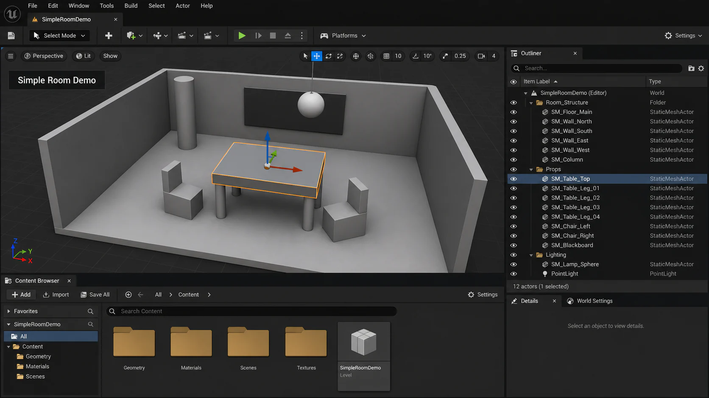

2주차 3교시 — 실습: 기본 도형으로 공간 만들기 (학생용)
관련 문서
| 관계 | 문서 |
|---|---|
| 강의 계획서 | 강의계획서: Game Engine II |
| 강의 아웃라인 | 2주차 아웃라인: 에디터 인터페이스 |
- 기본 도형(Cube, Sphere, Cylinder, Plane)만으로 실내·실외 공간을 직접 구성할 수 있다
- 이동(W)·회전(E)·스케일(R) 세 가지 트랜스폼을 자유롭게 활용할 수 있다
- Outliner 폴더 정리와 명명 규칙(SM_ 접두어)을 적용할 수 있다
1교시에서 에디터 구조를 배웠고, 2교시에서 오브젝트를 배치하고 움직이는 방법을 배웠습니다. 이제 직접 해볼 시간입니다.
실습 과제 안내
기본 도형(Cube, Sphere, Cylinder, Plane)만 사용해서 간단한 실내 또는 실외 공간을 만드세요. 교실, 카페, 방, 작은 광장 — 어떤 공간이든 좋습니다. 화려한 에셋이 아니라 트랜스폼 정확도와 씬 정리 상태를 평가합니다.

예시: 기본 도형으로 만든 간단한 방과 정리된 Outliner
필수 조건 — 4가지
| # | 조건 | 확인 |
|---|---|---|
| 1 | 오브젝트 8개 이상 배치 | □ |
| 2 | 모든 오브젝트에 의미 있는 영문 이름 부여 (SM_ 접두어 권장) | □ |
| 3 | Outliner 폴더로 분류 (최소 2개 폴더) | □ |
| 4 | 이동·회전·스케일 세 가지 트랜스폼 모두 사용 | □ |
제출 방법
| # | 제출물 | 설명 |
|---|---|---|
| 1 | 스크린샷 1장 | 뷰포트 + Outliner가 같이 보이는 화면 |
| 2 | 스크린샷 1장 | Outliner를 충분히 펼쳐서 이름이 보이는 화면 |
| 3 | LMS 업로드 | 2장을 LMS 과제란에 업로드 |
- Windows:
Win + Shift + S→ 영역 선택 → 클립보드에 복사 → 그림판에 붙여넣기 → 저장 - 언리얼 내: Viewport 좌측 상단
≡메뉴 →High Resolution Screenshot
Step 1 — 프로젝트 준비
1교시에서 프로젝트를 이미 만들고 폴더까지 만들었다면 이 단계를 건너뛰세요. 아직 안 했거나 새로 시작하고 싶다면 아래를 따라가세요.
1-1. 프로젝트 생성 (이미 있으면 건너뛰기)
작업 1 — 프로젝트 생성
- Epic Games Launcher에서 [Launch] 를 클릭하여 프로젝트 브라우저를 여세요.
- 프로젝트 브라우저에서 설정하세요. → 왼쪽 카테고리: [Games] / 가운데 템플릿: [Third Person] / 오른쪽 설정: Blueprint 선택, Starter Content 체크
- 오른쪽 하단에서 프로젝트 이름과 경로를 입력하세요. → 프로젝트 이름: “GameEngineII_Week02” (영문+언더바만) / 저장 경로: 수업 시작 시 안내된 서버 경로 → [Create] 클릭
- 에디터가 열릴 때까지 기다리세요. (처음엔 셰이더 컴파일로 시간이 걸립니다)
1-2. 에디터 환경 확인
작업 2 — 에디터 환경 확인
- 레이아웃이 UE4 Classic Layout인지 확인하세요. → Content Browser가 화면 하단에 있으면 OK. 아니라면 상단 메뉴바 [Window] → [Load Layout] → [UE4 Classic Layout].
- 메뉴가 영어로 표시되는지 확인하세요. → 한글이면 [Edit] → [Editor Preferences…] → [General] → [Region & Language] 에서 [Editor Language] 를 [English] 로 → [Restart Now].
1-3. 폴더 구조 세팅
작업 3 — Content 폴더 구조 세팅
- 화면 하단 Content Browser 패널의 왼쪽 폴더 트리에서 [Content] 폴더를 클릭하세요.
- 오른쪽 에셋 그리드의 빈 공간에서 마우스 오른쪽 버튼을 클릭하세요. → 팝업 메뉴가 나타납니다.
- [New Folder] 를 클릭하고, 이름을 타이핑한 뒤 Enter를 누르세요.
- 아래 4개 폴더를 만드세요.
Content/
├── Maps/ ← 레벨 파일 (.umap)
├── Props/ ← 소품 (3D 모델)
├── Materials/ ← 머티리얼
└── Blueprints/ ← 블루프린트1-4. 레벨 저장
작업 4 — 새 레벨을 Maps 폴더에 저장
- 화면 최상단 메뉴바에서 [File] 을 클릭하세요. → 드롭다운 메뉴가 펼쳐집니다.
- [Save Current Level As…] 를 클릭하세요. → 저장 다이얼로그 창이 열립니다.
- 다이얼로그 왼쪽에서 [Maps] 폴더를 클릭하세요.
- 하단 파일 이름 칸에 “Week02_Scene” 을 입력하세요.
- [Save] 버튼을 클릭하세요.
흔한 문제 — 프로젝트 준비
| 증상 | 원인 | 해결 |
|---|---|---|
| 프로젝트 생성 오류 | 이름에 한글·공백·특수문자 | 영문+언더바만 사용해 새로 생성 |
| 패널이 사라짐 | 실수로 닫음 | Window 메뉴에서 해당 패널 다시 열기 |
| 레이아웃이 이상함 | 패널 도킹 변경 | Window → Load Layout → UE4 Classic Layout |
Step 1.5 — 공간 컨셉 정하기
본격적으로 만들기 전에, 어떤 공간을 만들 건지 30초만 생각해보세요.
아래에서 하나를 고르거나, 자유롭게 정하세요.
| 컨셉 | 필요한 소품 예시 |
|---|---|
| 교실 | 칠판, 책상, 의자, 교탁 |
| 카페 | 테이블, 의자, 카운터, 선반 |
| 전시실 | 전시대, 기둥, 벽면 작품(얇은 Cube) |
| 놀이방 | 블록탑, 미끄럼틀(경사 Cube), 공(Sphere) |
컨셉 없이 도형을 배치하면 나중에 무엇을 표현한 공간인지 불명확해지기 쉽습니다. 컨셉을 정해두면 벽 위치, 소품 종류를 일관되게 결정할 수 있습니다.
Step 2 — 바닥 및 벽 배치
바닥 1개 + 벽을 배치해서 방의 기본 뼈대를 만드세요. 아래 조건을 만족시키면 됩니다. 방법은 스스로 시도해보세요.
달성 조건:
| # | 조건 |
|---|---|
| 1 | Plane으로 바닥 1개 배치 (Scale로 넓게) |
| 2 | Cube로 벽 4개 배치 (얇고 넓고 높게 만들기) |
| 3 | 모든 오브젝트에 SM_ 접두어 영문 이름 부여 |
| 4 | Outliner에 “Room_Structure” 폴더 만들어서 정리 |
| 5 | 이동(W), 회전(E), 스케일(R) 세 가지 트랜스폼 모두 사용 |
힌트 1: 도형 배치는 어떻게 하나요? (Place Actors)
- Place Actors 패널을 여세요. → 상단 메뉴바 [Window] → [Place Actors] 클릭, 또는 단축키 Shift + 1
- Place Actors 패널에서 [Shapes] 탭을 클릭하세요. → Cube, Sphere, Cylinder, Plane 등의 도형이 보여요.
- 원하는 도형을 마우스 왼쪽 버튼으로 클릭 & 드래그하여 Viewport(화면 가운데)로 끌어오세요.
힌트 2: 바닥 만들기 (Plane 배치 + 스케일)
- Place Actors → Shapes → Plane → Viewport로 드래그
- 위치를 원점으로 맞추세요. → Details Panel → Transform → Location → X: 0, Y: 0, Z: 0
- 크기를 키우세요. → R 키 → 중앙 흰색 큐브 핸들 드래그, 또는 Details Panel → Scale → X: 5, Y: 5, Z: 1
- 이름 변경 → Outliner에서 “Plane” 더블클릭 → “SM_Floor_Main” 입력 → Enter
힌트 3: 벽 만들기 (Cube 변형 + 복제)
- Place Actors → Shapes → Cube → Viewport로 드래그
- 벽 형태로 스케일 조정 → R 키(스케일 모드) → Details Panel → Scale → X: 0.1, Y: 5.0, Z: 3.0 (얇고 넓고 높게)
- 바닥 끝으로 이동 → W 키(이동 모드) → 화살표 드래그 또는 Location 값 직접 입력
- 이름 변경: “SM_Wall_North”
- 벽 복제: Alt + 드래그 → 반대편 배치 → 이름: “SM_Wall_South”
- 나머지 벽: 복제 → E 키(회전) → 파란 Z축 링 90도 회전 → 옆면 배치 → 이름: “SM_Wall_East”, “SM_Wall_West”
팁: 회전 스냅이 켜져 있으면(Viewport 우측 상단 원호 아이콘이 파란색) 10도 단위로 딱딱 맞춰져요. 90도 회전이 쉬워요.
힌트 4: Outliner 폴더 정리
- Outliner 패널 빈 공간에서 우클릭 → [Create Folder] → “Room_Structure”
- SM_Floor_Main, SM_Wall_North ~ West를 Ctrl+클릭으로 다중 선택 → “Room_Structure” 폴더 위로 드래그
중간 점검
이 시점에 잠깐 멈추고 자신의 화면에서 아래 항목을 점검하세요.
확인 포인트:
- Outliner 이름이 의미 있는 영문인가?
- 폴더로 분류되어 있는가?
- 공간의 컨셉이 전달되는가?
확인이 끝나면 부족한 부분을 수정하면서 소품을 추가하세요.
Step 3 — 소품 배치 및 공간감 연출
뼈대가 완성되면 소품을 배치해 공간감을 더합니다. 기본 도형을 조합하면 간단한 가구를 표현할 수 있습니다.
3-1. 소품 아이디어
어떤 공간을 만들든 아래 조합을 참고하세요.
| 소품 | 도형 조합 | 설명 |
|---|---|---|
| 테이블 | Cube(상판) + Cylinder 4개(다리) | 상판은 넓고 얇게, 다리는 길고 가늘게 |
| 의자 | Cube(좌석) + Cube(등받이) + Cylinder 4개(다리) | 좌석은 정사각형, 등받이는 세로로 길게 |
| 기둥 | Cylinder 1개 | 높이만 늘리면 기둥 |
| 칠판/스크린 | Cube 1개 | 매우 얇고 넓게 + 벽에 붙이기 |
| 화분 | Cylinder(화분) + Sphere(나무) | 실린더 위에 구 올리기 |
| 조명 기구 | Sphere 1개 | 천장에 매달린 느낌으로 배치 |
3-2. 소품 배치 방법
작업 5 — 테이블 만들기 (예시)
- 상판 만들기 — Place Actors → Shapes → Cube → Viewport로 드래그 → R 키 → Scale X: 2.0, Y: 1.0, Z: 0.05 (넓고 얇게) → W 키로 방 안쪽 이동 → Outliner 이름 “SM_Table_Top”.
- 다리 만들기 — Place Actors → Shapes → Cylinder → Viewport로 드래그 → R 키 → Scale X: 0.1, Y: 0.1, Z: 0.8 (가늘고 길게) → W 키로 상판 모서리 아래 배치 → Outliner 이름 “SM_Table_Leg_01”.
- 다리 복제 (3개 더) — SM_Table_Leg_01 선택 → Alt + 드래그 → 다른 모서리에 배치 → 이름 “SM_Table_Leg_02” → 반복하여 “SM_Table_Leg_03”, “SM_Table_Leg_04” 생성.
- 폴더 정리 — Outliner 빈 곳 우클릭 → [Create Folder] → “Props” → 테이블 관련 오브젝트 5개를 “Props” 폴더로 드래그.
다리를 정확한 위치에 배치하려면 Details Panel → Location 값을 직접 입력하거나, 스냅을 켜서(Viewport 우측 상단 격자 아이콘 파란색) 격자에 맞추세요.
3-3. 추가 소품 배치
테이블을 만든 것처럼 의자, 기둥, 화분 등을 추가해서 공간을 채워주세요. 최소 오브젝트 8개 이상이 필요합니다. (바닥 1 + 벽 4 = 5개이므로, 소품이 최소 3개 이상 필요합니다)
- 바닥 아래로 파고들면: Details → Location → Z 값을 높여주세요
- 오브젝트가 겹쳐 보이면: W 키로 조금씩 이동하여 분리
- 스케일이 이상하면: Details → Scale에서 음수가 아닌지 확인
3-4. 최종 Outliner 정리
모든 소품을 배치했으면, Outliner를 깔끔하게 정리하세요.
Outliner:
├── [Folder] Room_Structure
│ ├── SM_Floor_Main
│ ├── SM_Wall_North
│ ├── SM_Wall_South
│ ├── SM_Wall_East
│ └── SM_Wall_West
├── [Folder] Props
│ ├── SM_Table_Top
│ ├── SM_Table_Leg_01 ~ 04
│ ├── SM_Chair_01
│ └── SM_Pillar_01
└── [Folder] Lighting (조명을 추가했다면)
└── DirectionalLight_Main흔한 문제 — 배치 & 트랜스폼
| 증상 | 원인 | 해결 |
|---|---|---|
| Place Actors 패널이 안 보임 | 패널 미열림 | Window → Place Actors 또는 Shift+1 |
| 오브젝트가 바닥 아래로 파고듦 | Z 위치 음수 | Details → Location → Z 값을 0 이상으로 |
| 기즈모가 안 보임 | 오브젝트 미선택 | Viewport 또는 Outliner에서 오브젝트 클릭 |
| 회전이 자유롭게 안 됨 | 회전 스냅 켜져 있음 | Viewport 우측 상단 원호 아이콘 클릭하여 회색(끄기)으로 전환 |
| Alt+드래그로 복제가 안 됨 | 이동 모드(W)가 아닌 상태 | W 키 누른 후 Alt+드래그 |
| Outliner에 오브젝트 이름이 겹침 | 복제 시 자동 이름 | 복제 즉시 이름 변경 습관화 |
Step 4 — 최종 확인 및 제출
4-1. 저장
Ctrl + S 로 레벨을 덮어쓰기 저장하세요.
제출 전에 반드시 저장하세요. 저장하지 않고 에디터를 닫으면 작업이 사라집니다.
4-2. 스크린샷 촬영
작업 6 — 스크린샷 1 (뷰포트 + Outliner 통합 화면)
- Viewport에서 공간 전체가 잘 보이는 앵글을 잡으세요. → RMB(마우스 오른쪽) + WASD로 카메라 이동, RMB + 마우스 휠로 이동 속도 조절. 공간이 한눈에 들어오는 위치를 찾으세요.
- Outliner 패널이 화면에 보이는지 확인하세요. → 접혀있다면 폴더를 펼쳐서 오브젝트 이름이 보이게 하세요.
- 스크린샷을 찍으세요. →
Win + Shift + S→ 화면 전체 또는 영역 선택 → 그림판에 붙여넣기(Ctrl + V) → 파일로 저장 (PNG 권장)
- 스크린샷을 찍으세요. →
작업 7 — 스크린샷 2 (Outliner 클로즈업)
- Outliner 패널을 가능한 넓게 펼치세요. → 패널 경계를 드래그하면 크기를 키울 수 있어요. 모든 폴더를 > 클릭하여 펼치세요.
- 모든 오브젝트 이름이 보이는 상태에서 스크린샷을 찍으세요. →
Win + Shift + S→ Outliner 영역만 선택 → 그림판에 붙여넣기 → 저장
- 모든 오브젝트 이름이 보이는 상태에서 스크린샷을 찍으세요. →
4-3. LMS 제출
작업 8 — LMS 제출
- LMS(학습관리시스템)에 접속하세요.
- 해당 주차 과제란에 스크린샷 2장을 업로드하세요.
- 제출 완료를 확인하세요.
흔한 문제 — 저장 & 제출
| 증상 | 원인 | 해결 |
|---|---|---|
| 스크린샷 찍는 법 모름 | Windows 단축키 미숙 | Win + Shift + S 사용 또는 PrtSc 키 활용 |
| LMS 업로드 실패 | 파일 크기·형식 문제 | PNG, 5MB 이하 확인 |
빨리 끝난 학생을 위한 확장 과제
시간이 남으면 아래를 시도해보세요.
확장 과제 1 — Starter Content 에셋 활용
- 화면 하단 Content Browser를 보세요.
- 왼쪽 폴더 트리: [Content] → [StarterContent] → [Props] 클릭
- 오른쪽 에셋 그리드에서 SM_TableRound, SM_Chair 같은 에셋을 Viewport로 드래그하여 배치해보세요.
- 기본 도형과 섞어서 공간을 더 풍성하게 만들어보세요.
확장 과제 2 — 수치 입력으로 정밀 배치
벽 4개를 Details Panel → Location 수치 입력으로 정확하게 정사각형 방을 만들어보세요. 예시 (바닥 Scale X:5, Y:5 기준):
- SM_Wall_North: Location Y=250
- SM_Wall_South: Location Y=-250
- SM_Wall_East: Location X=250, Rotation Z=90
- SM_Wall_West: Location X=-250, Rotation Z=90
확장 과제 3 — 조명 추가
- Place Actors 패널 → [Lights] 탭 → [Point Light] 를 Viewport로 드래그
- W 키로 천장 근처로 이동
- Details Panel → Light 섹션 → Intensity(밝기)와 Light Color(색상) 조정
- Outliner에서 이름 변경: “PointLight_Ceiling”
- “Lighting” 폴더를 만들어서 정리
평가 기준
필수 요구사항 (통과 기준):
| 항목 | 기준 |
|---|---|
| 공간 구성 | 바닥 + 벽 이상의 공간 구성 (최소 오브젝트 8개 이상) |
| 명명 규칙 | 모든 오브젝트에 의미 있는 영문 이름 (SM_ 접두어) |
| 제출물 | 스크린샷 2장 (뷰포트 + Outliner) LMS 업로드 |
참고 자료
| 자료 | 설명 |
|---|---|
| Editor Interface | 언리얼 에디터 인터페이스 공식 문서 |
| Place Actors | 액터 배치 공식 문서 |
| Transforming Actors | 트랜스폼 조작 공식 문서 |
| 단축키 치트시트 PDF | 강사 배포 자료 |
Step 1: 프로젝트 생성, 폴더 구조 세팅, 레벨 저장 Step 2: Plane(바닥) + Cube(벽 4개)로 공간 뼈대 구성 Step 3: 기본 도형 조합으로 소품 배치 + Outliner 폴더 정리 Step 4: 저장 → 스크린샷 2장 촬영 → LMS 제출